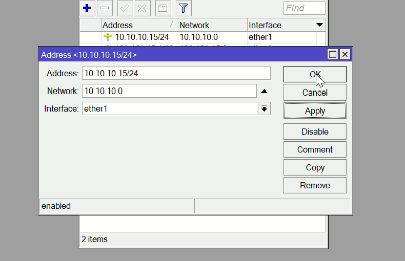

TUTORIAL UKK PAKET 2 TKJ
Panduan Uji Kompetensi Keahlian (UKK) Teknik Komputer dan Jaringan Paket 2.
| Interface / Perangkat | Fungsi Jaringan | Alamat IP / Subnet | Gateway / DNS | Keterangan Port |
|---|---|---|---|---|
ether1 (Router) |
Jalur Internet ISP | 10.10.10.15/24 |
GW: 10.10.10.254 | DNS: 8.8.8.8 |
NAT Masquerade & Dst-NAT 9090 |
ether2 (Router) |
Jaringan Server VM | 192.168.15.1/29 |
GW: 192.168.15.1 |
Segment Server Admin |
ether3 (Router) |
Jaringan Klien Lokal | 192.168.100.1/24 |
- | DHCP Server: 192.168.100.2 - 50 |
deb13web (VM Web) |
LMS Moodle Web Server | 192.168.15.2/29 |
GW: 192.168.15.1 |
HTTP Port 80 (Internal) |
deb13db (VM DB) |
MariaDB Server | 192.168.15.3/29 |
GW: 192.168.15.1 |
MySQL Port 3306 (Bind 0.0.0.0) |
| PC Client | Komputer Penguji / Siswa | 192.168.100.1/24 |
GW: 192.168.100.1 |
Static / DHCP Client |
Part 1: Konfigurasi Router MikroTik & Client
1.1 Login & Konfigurasi IP Address Router
Masuk ke panel konfigurasi router MikroTik menggunakan aplikasi WinBox.

Membuka menu IP pada sidebar kiri WinBox.

Memilih submenu Addresses dan menekan ikon tambah (+) untuk mulai mengatur alamat IP.

Mengatur IP pada interface ether1 (jalur sumber internet ISP: 10.10.10.xx/24).

Mengatur IP pada interface ether2 (jalur menuju jaringan VirtualBox VM: 192.168.xx.1/29).

Mengatur IP pada interface ether3 (jalur jaringan lokal int-client: 192.168.100.1/24).

1.2 Konfigurasi Firewall NAT (Internet Gateway & Port Forwarding LMS)
Membuka menu IP > Firewall.

Beralih ke tab NAT dan menambahkan rule baru (+).

Pada tab General, memilih Chain: srcnat dan Out. Interface: ether1 untuk akses internet gateway.

Pada tab Action, memilih Action: masquerade lalu klik OK.

Membuat rule Port Forwarding (Destination NAT) dengan Chain: dstnat pada ether1 (menerima akses luar pada IP ISP port 9090) dan protocol tcp(6) dengan in interface ether 1.

Pada tab Action, memilih Action: dst-nat dan mengarahkan To Addresses ke IP VM Web Server (192.168.xx.2) dengan To Ports: 80.

1.3 Konfigurasi DHCP Server untuk Jaringan Lokal
Membuka menu IP > DHCP Server.

Tampilan jendela DHCP Server, lalu menekan tombol DHCP Setup.

Memilih interface jaringan lokal (ether3 / int-client) pada wizard DHCP Setup.

Menentukan rentang alamat IP (Addresses to Give Out) yang akan dibagikan ke client.

Menentukan DNS Server untuk client DHCP hingga proses setup selesai.

1.4 Konfigurasi Routing (Gateway) & DNS
Membuka menu IP > Routes.

Tampilan daftar tabel routing dan menekan tombol tambah (+).

Mengisi Gateway dengan alamat IP gateway dari ISP pada jalur ether1.

Menyimpan konfigurasi route dan memastikan statusnya aktif (AS, Active Static).

Membuka menu IP > DNS.

Mengisi Servers dengan DNS Google (8.8.8.8), mencentang Allow Remote Requests, lalu klik OK.

1.5 Konfigurasi Jaringan PC Client & Uji Konektivitas
Membuka kotak dialog Run (Win + R) di PC Client dan mengetikkan ncpa.cpl.

Memilih adapter Ethernet pada jendela Network Connections.

Membuka jendela Status/Properties pada adapter Ethernet.

Memilih Internet Protocol Version 4 (TCP/IPv4) lalu klik Properties.

Mengatur konfigurasi IP pada sisi client dan menekan OK.

Memastikan status jaringan pada PC client sudah terhubung (Internet access).

Kembali ke WinBox dan memilih menu New Terminal.

Tampilan awal jendela CLI Terminal MikroTik.

Melakukan pengujian konektivitas jaringan menggunakan perintah ping dari terminal dan memastikan hasilnya reply.

Bagian 2: Pembuatan & Konfigurasi Mesin Virtual di VirtualBox
Membuka aplikasi Oracle VM VirtualBox dan menekan tombol New untuk mulai membuat mesin virtual.

Menentukan nama VM (web-xx), memilih file ISO Debian, serta mengatur alokasi spesifikasi minimal RAM 2 GB (2048 MB) dan 1 CPU.

Tampilan mesin virtual pada dashboard VirtualBox setelah berhasil dibuat.

Membuka menu Settings > Network, lalu mengubah mode Attached to menjadi Bridged Adapter agar VM berada satu segmen jaringan dengan router (192.168.xx.0/29).

Bagian 3: Instalasi Sistem Operasi Debian Server
3.1 Pemilihan Bahasa, Lokasi & Keyboard
Memilih menu Install pada layar awal boot ISO Debian.

Memilih bahasa English.

Memilih opsi other pada pemilihan lokasi.

Memilih kawasan Asia.

Memilih negara Indonesia.

Memilih lokalisasi default (United States - en_US.UTF-8).

Memilih tata letak keyboard (American English).

3.2 Konfigurasi Jaringan Statis & Hostname
Memilih pengaturan jaringan secara manual.

Memilih opsi Configure network manually.

Mengisi alamat IP statis VM Web Server (192.168.xx.2).

Mengisi Netmask 255.255.255.248 (/29).

Mengisi IP Gateway 192.168.xx.1.

Mengisi DNS Server dengan 8.8.8.8.

Mengisi Hostname (web-xx).

Mengosongkan bagian Domain name lalu klik Continue.

3.3 Pengaturan Akun Root, User & Zona Waktu
Memasukkan password akun root.

Memasukkan ulang password root.

Mengisi nama lengkap pengguna baru.

Mengisi username pengguna baru.

Memasukkan password pengguna baru.

Memasukkan ulang password pengguna baru.

Memilih zona waktu Indonesia.

3.4 Partisi Disk, Software & Boot Loader GRUB
Memilih metode Guided - use entire disk.

Memilih disk virtual yang akan dipartisi.

Memilih All files in one partition.

Memilih Finish partitioning and write changes to disk.

Memilih Yes untuk menyimpan partisi.

Memilih No saat ditanya media instalasi tambahan.

Pengaturan network mirror awal.

Melanjutkan instalasi tanpa network mirror terlebih dahulu.

Memilih No pada survei popularity-contest.

Memilih paket standard system utilities.

Memilih Yes untuk memasang GRUB boot loader.

Memilih disk /dev/sda untuk instalasi GRUB.

Instalasi selesai dan me-reboot VM.

Bagian 4: Setup Awal Debian, Repositori & Cloning VM
Mengecek alamat IP pada interface jaringan VM Web Server.
ip a
Menguji koneksi internet dari VM dengan melakukan ping ke moodle.org.
ping moodle.org
Mengisi daftar repositori network mirror resmi Debian di dalam file /etc/apt/sources.list.
nano /etc/apt/sources.list
Memperbarui indeks daftar paket dari repositori Debian.
apt update
Mematikan VM Web Server lalu memilih menu Clone di VirtualBox.

Mengubah nama hasil clone menjadi db_server dan memilih Full Clone.

Membuka pengaturan Network Bridged Adapter pada db_server lalu melakukan Refresh MAC Address agar tidak sama dengan Web Server.

Mengubah alamat IP statis milik db_server menjadi 192.168.xx.3/29.
nano /etc/network/interfaces
Memvalidasi perubahan alamat IP di db_server menggunakan perintah ip a.
systemctl restart networking
ip a
Bagian 5: Konfigurasi Database Server MariaDB
Instalasi MariaDB dan mengubah bind-address dari 127.0.0.1 menjadi 0.0.0.0 agar database dapat diakses secara remote dari VM Web Server.
apt install mariadb-server -y
nano /etc/mysql/mariadb.conf.d/50-server.cnf
systemctl restart mariadbMasuk ke konsol MariaDB, membuat database moodle dan memberikan hak akses penuh kepada moodleuser dari alamat IP Web Server.
mysql -u root -pCREATE DATABASE moodle DEFAULT CHARACTER SET utf8mb4 COLLATE utf8mb4_unicode_ci;
CREATE USER 'moodleuser'@'192.168.3.2' IDENTIFIED BY '1';
GRANT ALL PRIVILEGES ON moodle.* TO 'moodleuser'@'192.168.3.2';
FLUSH PRIVILEGES;
EXIT;
Bagian 6: Konfigurasi Web Server, Instalasi & Pengujian LMS Moodle
6.1 Instalasi Paket Web Server & Ekstraksi Source Code Moodle
Instalasi Apache2, PHP beserta modul yang dibutuhkan, lalu mengunduh file arsip Moodle di dalam direktori /var/www/html.
apt install apache2 mariadb-client php libapache2-mod-php php-mysql php-xml php-mbstring php-curl php-zip php-gd php-intl php-soap -y
cd /var/www/html
wget https://download.moodle.org/download.php/direct/stable503/moodle-latest-503.tgz
Mengekstrak arsip Moodle, memindahkan file .tgz ke /etc, mengeluarkan seluruh isi folder moodle ke /var/www/html, dan mengecek hasilnya dengan ls.
tar -zxvf moodle-latest-503.tgz
mv moodle-latest-503.tgz /etc
mv moodle/* .
ls
Membuat folder /var/www/moodledata dan mengatur hak akses (owner dan permission) untuk www-data.
mkdir -p /var/www/moodledata
chown -R www-data:www-data /var/www/html
chown -R www-data:www-data /var/www/moodledata
chmod -R 770 /var/www/moodledata
chmod -R 755 /var/www/html
6.2 Konfigurasi VirtualHost Apache2 & Parameter php.ini
Mengubah arah DocumentRoot menjadi /var/www/html/public.
nano /etc/apache2/sites-available/000-default.conf
Menghapus tanda komentar (;) pada max_input_vars dan mengubah nilainya menjadi 5000.
nano /etc/php/8.2/apache2/php.ini
systemctl restart apache26.3 Instalasi Moodle Melalui Web Browser
Membuka browser dan mengakses IP VM Web Server (http://192.168.xx.2), lalu memilih bahasa instalasi.

Konfirmasi lokasi direktori Moodle dan moodledata, lalu klik Next.

Memilih tipe driver database MariaDB (native/mariadb).

Mengisi informasi koneksi database sesuai yang telah dibuat (Database host: IP db_server, Database name: moodle, Database user: moodleuser, Password: 1).

Menyetujui lisensi penggunaan Moodle (Continue).

Memastikan pengecekan sistem terpenuhi lalu klik Continue.

Menunggu proses instalasi modul selesai lalu klik Continue.

Mengisi nama admin, password, dan email admin untuk login utama.

Mengisi nama situs (Full site name dan Short name).

Mengisi Support email dan No-reply address.

6.4 Pengujian Pembuatan Course, User & Enrolment
Membuat course baru di Moodle.

Masuk ke menu Site administration > Users > Add a new user.

Mengisi Username dan Password untuk user baru.

Mengisi First name, Last name, dan Email address pada halaman yang sama lalu menyimpan user.

Tampilan hasil pembuatan user baru pada daftar pengguna.

Masuk ke Site administration > Courses > Manage courses and categories untuk memasukkan user ke dalam course.

Memilih course yang dibuat lalu membuka menu Enrol users.

Mencari user yang telah dibuat lalu melakukan Enrol ke dalam course.

6.5 Konfigurasi Akses Eksternal (HTTP_HOST) & Pengujian Port Forwarding
Membuka file /var/www/html/config.php untuk menyesuaikan pengaturan alamat akses web (wwwroot).
nano /var/www/html/config.php
Mengubah baris $CFG->wwwroot menjadi dinamis agar Moodle dapat diakses dari jaringan lokal maupun eksternal.

$CFG->wwwroot = 'http://' .$_SERVER['HTTP_HOST'];systemctl restart apache2Percobaan akses dari jaringan luar menggunakan alamat http://10.10.10.3:9090 dan berhasil masuk ke tampilan halaman login Moodle.

Bagian 7: Otomatisasi Backup dengan Bash Script & Cronjob
7.1 Konfigurasi Otomatisasi Backup pada VM Web Server
Membuat script backup web server (backup_web.sh) untuk mem-backup dan mengompresi file konfigurasi serta data web server ke direktori /backup.
nano /usr/local/bin/backup_web.sh
Memberikan izin eksekusi pada script backup lalu dijalankan manual untuk pengecekan.
chmod +x /usr/local/bin/backup_web.sh
/usr/local/bin/backup_web.shMembuka konfigurasi penjadwalan cronjob (pilih 1 untuk editor nano) dan menambahkan baris penjadwalan otomatis untuk menjalankan /usr/local/bin/backup_web.sh.
crontab -e
Mengecek isi direktori /backup untuk memastikan file arsip backup web server telah berhasil terbentuk.
ls /backup
7.2 Konfigurasi Otomatisasi Backup pada VM Database Server
Membuat script backup database (backup_db.sh) untuk mem-backup database Moodle ke dalam direktori /backup.
nano /usr/local/bin/backup_db.sh
Memberikan izin eksekusi pada script backup database lalu dijalankan manual untuk pengecekan.
chmod +x /usr/local/bin/backup_db.sh
/usr/local/bin/backup_db.shMembuka konfigurasi cronjob (pilih 1 untuk menggunakan editor nano) dan menambahkan jadwal cronjob otomatis untuk mengeksekusi /usr/local/bin/backup_db.sh.
crontab -e
Mengecek isi direktori /backup pada db_server untuk memvalidasi bahwa file hasil backup database sudah tersimpan.
ls /backup